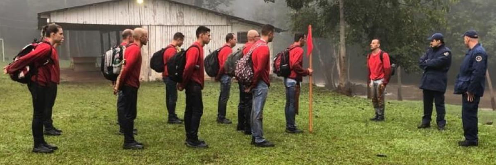
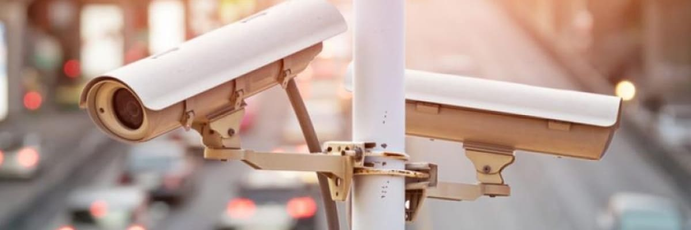

Uma solução para o policiamento comunitário em São Paulo é a criação de programas de treinamento específicos para os policiais que atuam nas áreas de maior vulnerabilidade social. É importante que esses policiais tenham um conhecimento aprofundado sobre a realidade das comunidades em que trabalham e estejam capacitados para lidar com conflitos de forma mais pacífica e respeitosa, criando uma relação de confiança com a população local.
 https://www.cbm.sc.gov.br/index.php/blog-de-noticias/3-batalhao-realiza-treinamento-de-resistencia-operacional-com-alunos-do-curso-de-bombeiro-comunitarioOutra solução é a criação de parcerias entre a polícia e outras instituições e organizações da comunidade, como escolas, associações de moradores e igrejas. Essas parcerias podem incluir projetos conjuntos de segurança, como patrulhamento comunitário e monitoramento de áreas de risco, além de atividades de prevenção e conscientização, como campanhas educativas e ações de valorização da cultura local.
 https://blog.dimensional.com.br/seguranca-eletronica-na-mobilidade-urbana/Por fim, é essencial investir em tecnologia e inovação para o policiamento comunitário em São Paulo. Isso inclui a utilização de câmeras de monitoramento, sistemas de geolocalização e comunicação, e a implantação de plataformas digitais para facilitar o acesso da população aos serviços de segurança pública. Além disso, é importante que essas tecnologias sejam acompanhadas de políticas de transparência e prestação de contas por parte das autoridades policiais, para garantir a efetividade e a confiança da população no policiamento comunitário.